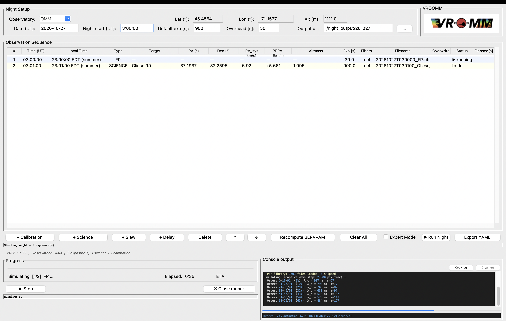
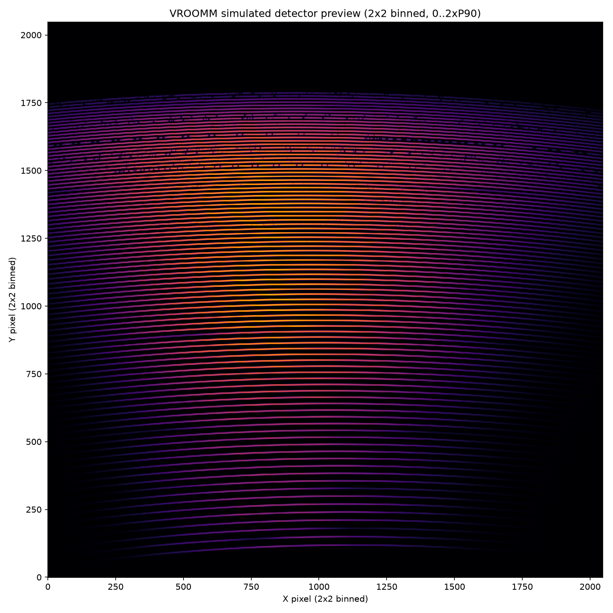
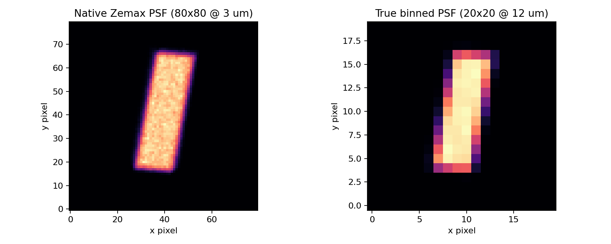
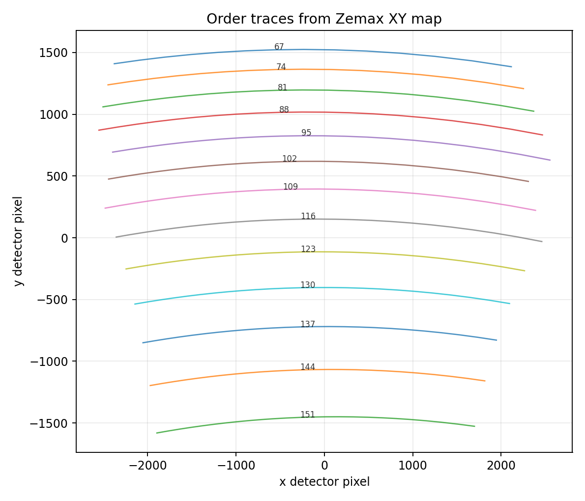
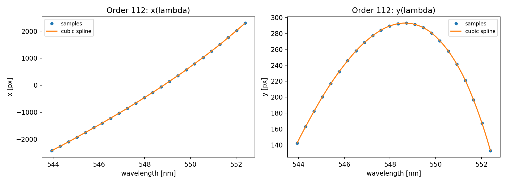
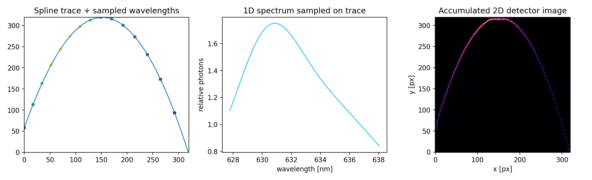

Local Installation
Everything runs locally with plain Python. No web backend required.
Daily Workflow (In Practice)
The planner drives the observing sequence and launches the runner. This is the only command you normally need.
Planner GUI

Drop your screenshot at docs/assets/gui_screenshot.png
Detector Preview

PNG preview is true 2x2 binned and scaled to 0..2xP90.
Simulation Summary
Methods
Auto-extracted from simulate_params.yaml during asset generation.
Mini Lecture: How A 1D Spectrum Becomes A 2D Detector Image
This simulator does not draw arbitrary lines on an image. It starts with optical design products from Zemax, then propagates a calibrated spectrum through trace geometry and PSF deposition so every detector pixel receives physically motivated photon counts.
The four figures below are generated automatically from your local data and are meant to be read in order. They illustrate the exact sequence used in the code path.
Step 1. Build Detector-Scale PSFs
Input: Zemax PSF stamp (80x80 at 3 um sampling). Operation: true block binning to detector sampling (20x20 at 12 um), with flux conservation. Output: detector-scale PSF kernels ready for sub-pixel placement.

Step 2. Trace Geometry From XY Maps
Input: per-order wavelength-position map from the Zemax XY table. Operation: convert mm to detector pixels and construct order centerlines. Output: wavelength-tagged trajectories for each order on detector coordinates.

Step 3. Spline Interpolation Along The Trace
Input: sparse optical-design samples. Operation: fit cubic splines x(lambda) and y(lambda), then sample at the simulation wavelength step. Output: smooth wavelength to sub-pixel detector mapping.

Step 4. Photon-Conserving 2D Stamp Accumulation
Input: sampled spectral flux, interpolated coordinates, and detector-scale PSF kernels. Operation: shift and add PSF stamps at each wavelength coordinate. Output: final detector frame in photons per pixel.

Transmission Snapshot
Key Features
- Science fiber routing with simultaneous sky in both fibers.
- Wavelength-dependent throughput and adaptive spectral sampling.
- SIMBAD plus Gaia DR3 target enrichment with per-target overrides.
- Planner-to-runner pipeline with status-aware execution.
Generated Detector Gallery
Build Website Assets
This regenerates manifest data, lecture figures, and the detector image gallery for this page.